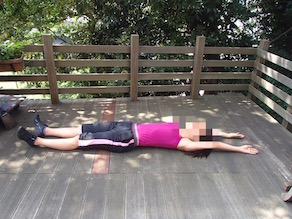
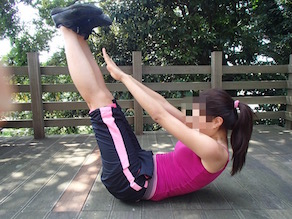
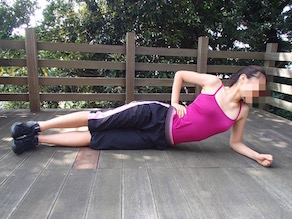
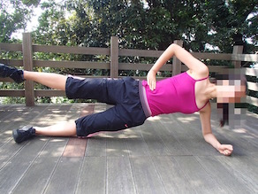

セクシーなくびれをつくる！STEP4
エクステンションとVショット
① 床で仰向けに寝て、両腕両脚をまっすぐ伸ばす。
② 両腕は肩幅、両脚は肩幅より広めに開く。
③ 両手でつま先をタッチするように上半身と下半身を同時に引き上げ、ゆっくりもどる。
※腰がそらないように！
 
シングル・クイックサイドプランク
① 床で横向きに寝て、下の肘を肩の下に固定し上体を起こす。
② 両脚をまっすぐ伸ばし、上の足を浮かせる。
 
Copyright (C) 2015 @muscleam1